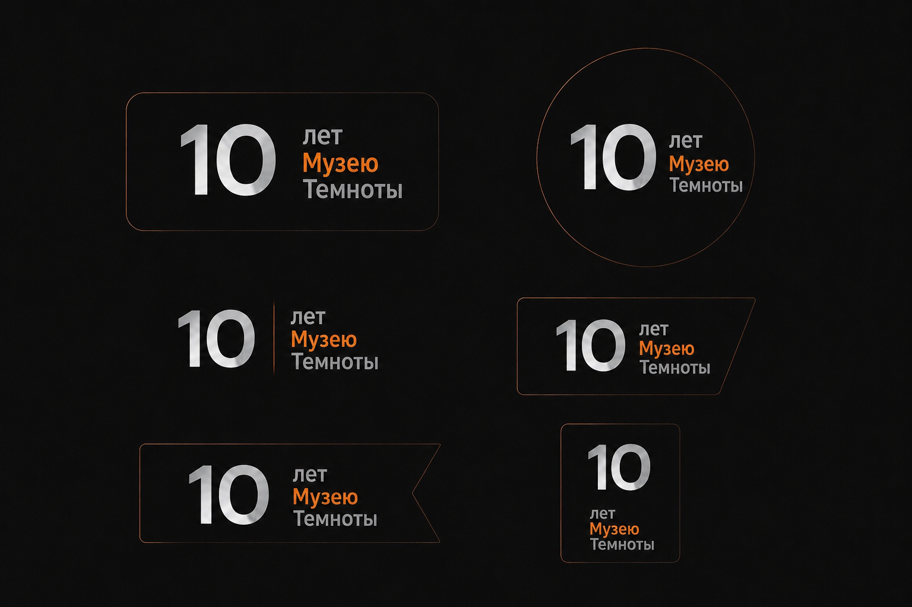
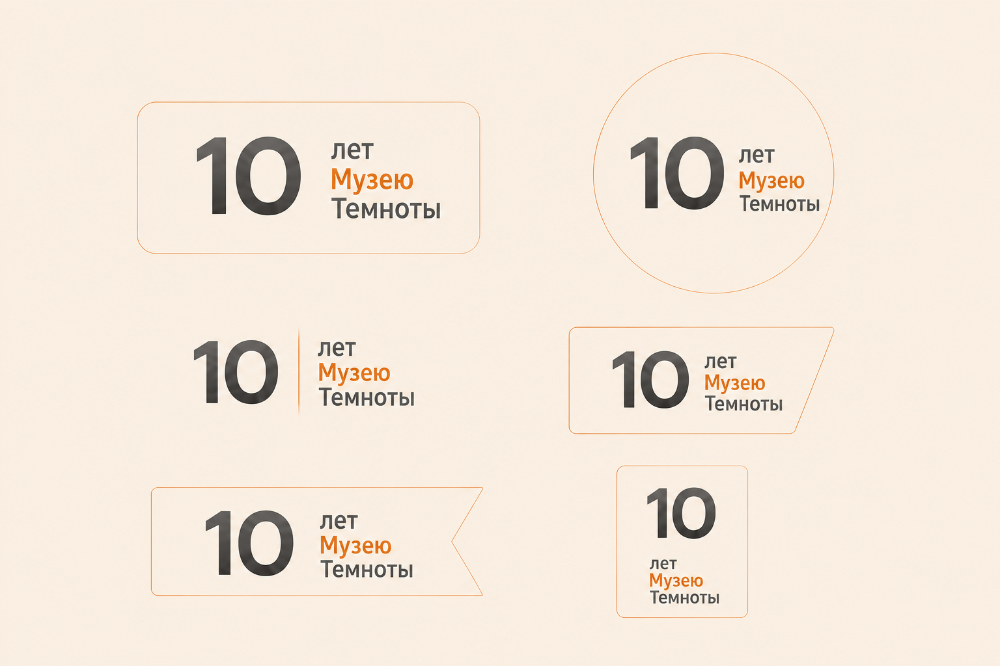
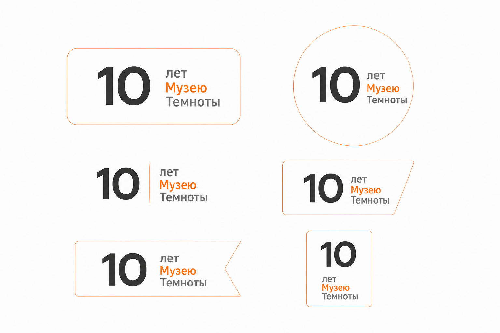

Задача
Разработать универсальную плашку к юбилею компании (10 лет Музею Темноты), которую можно добавлять во все креативы для соцсетей - видео, картинки, сторис. Плашка должна быть заметной, но не перетягивать на себя внимание. Основной текст - «10 лет Музею Темноты».
Брендбук был предоставлен. Ключевая задача - сделать несколько вариантов, чтобы подстраивать под разные форматы и фоны.
Решение
Я разработала серию плашек в разных формах и цветовых решениях, опираясь на фирменные цвета и стилистику бренда. Основные варианты:
- Тёмный фон - для светлых креативов, плашка с серебристым текстом и тонкой оранжевой обводкой.
- Светлый фон (бежевый) - для тёмных креативов, плашка с тёмным текстом и оранжевым акцентом.
- Чистый белый - универсальный вариант, который можно накладывать на любой фон с дополнительной обводкой.
Формы варьируются от классического прямоугольника до круга и скошенных углов - чтобы можно было подобрать под конкретный макет (видео, квадратный пост, сторис).
Варианты плашек

black.png';">
beige.png';">
white.png';">Результат
Получился набор универсальных элементов, которые можно использовать в любых креативах - от видео до статичных картинок. Разные формы и цвета позволяют подобрать идеальный вариант под конкретный формат, а прозрачный фон делает их лёгкими в монтаже.
Плашки уже используются в соцсетях Музея Темноты и вписываются в фирменный стиль, не перегружая контент.
Моя роль
Дизайнер Концепция Подготовка к использованию